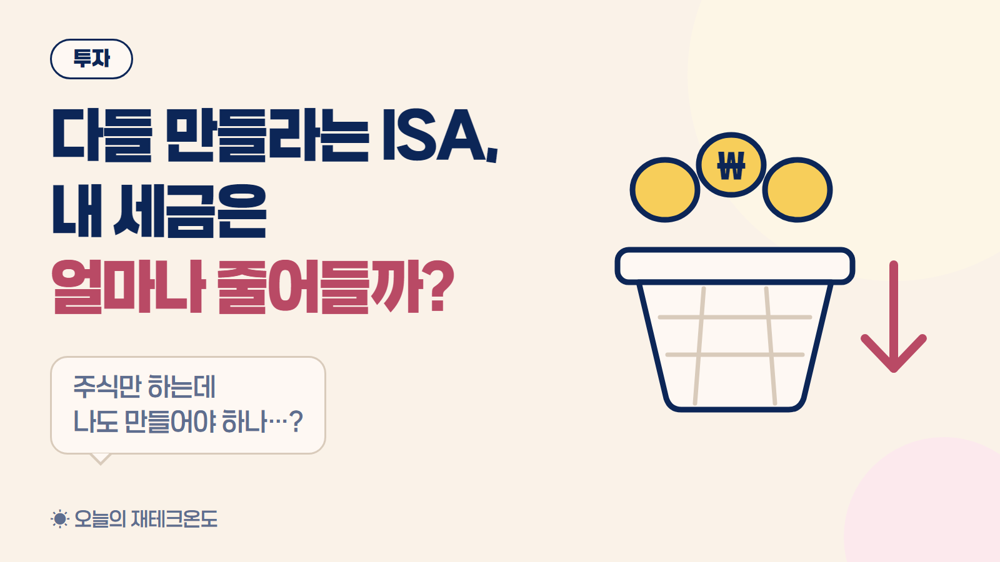
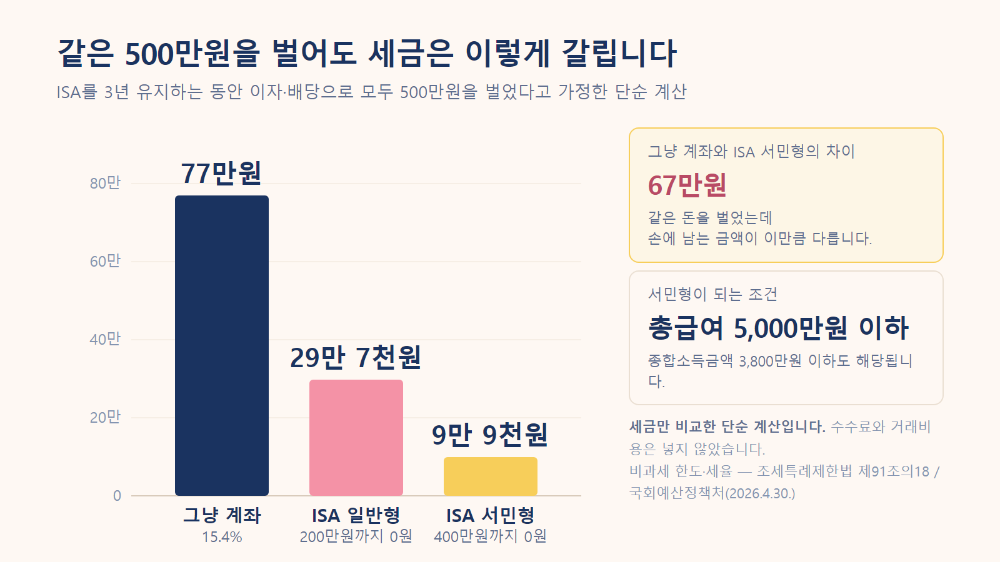
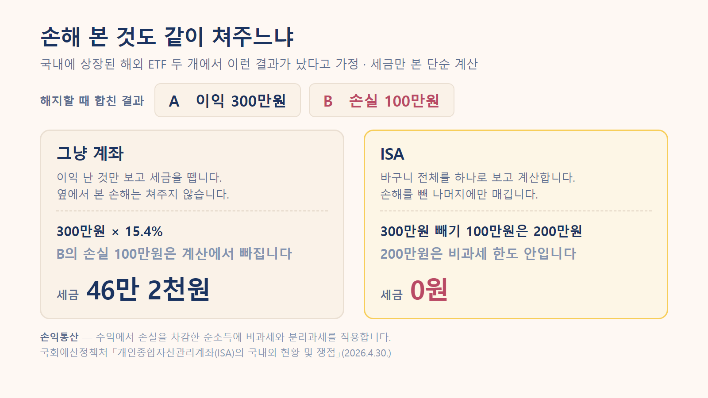
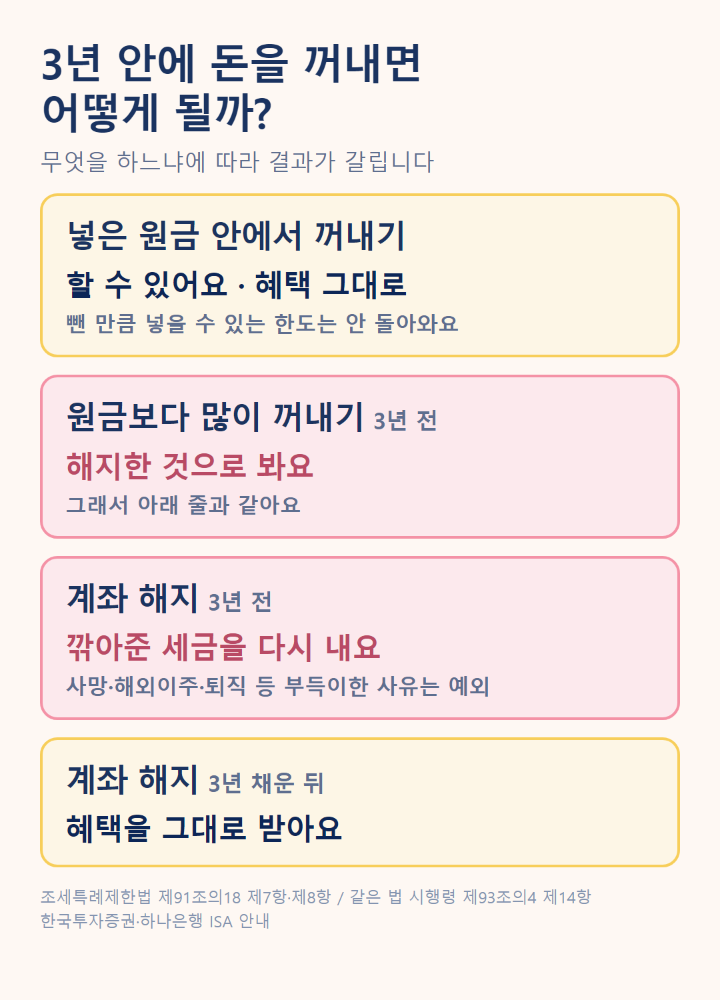
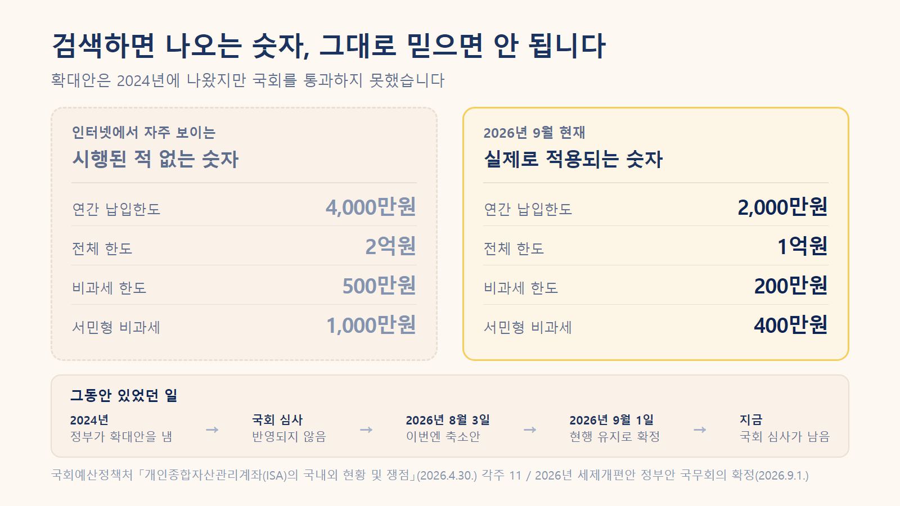

"다들 ISA는 하나 만들어두라는데, 그게 나한테도 좋은 걸까?"
한 번쯤 들어보셨을 겁니다. 저도 "안 만들면 손해"라는 말만 여러 번 듣고, 정작 뭐가 얼마나 좋은지는 설명하지 못했어요.
좋은 점은 분명합니다. 다만 누구에게나 똑같이 좋은 건 아니에요.
저는 한동안 ISA를 예금 같은 상품이라고 생각했습니다. 아니었어요.
ISA는 상품이 아니라 계좌입니다. 빈 바구니라고 보면 됩니다.
그 안에 예금도 넣고, 주식도 넣고, 여러 투자상품도 넣을 수 있어요. 바구니 자체가 돈을 벌어주지는 않습니다. 뭘 담을지는 여전히 내가 정해야 해요.
대신 이 바구니에는 딱 하나 특별한 게 있습니다.
3년 이상 유지하면, 바구니 안에서 번 돈에 붙는 세금을 깎아줍니다.
정식 이름은 개인종합자산관리계좌입니다. 이름이 길어서 보통 ISA라고 부릅니다.
혜택이 얼마나 큰지 보려면 원래 얼마를 내는지부터 알아야 합니다.
예금에 돈을 넣어두면 이자가 붙죠. 주식을 갖고 있으면 회사가 번 돈의 일부를 나눠주기도 하는데, 이걸 배당금이라고 합니다.
은행 예금에서 받는 이자나 주식에서 받는 배당처럼, 돈을 굴려서 생기는 수익에는 세금이 붙습니다. 세율은 15.4%예요.
100만원을 벌었으면 15만 4천원이 세금으로 빠져나갑니다. 내가 신고하는 게 아니라 받을 때 이미 떼고 들어와요. 그래서 세금을 냈다는 느낌도 잘 안 듭니다.
이자·배당소득 원천징수세율 15.4%(소득세 14% + 지방소득세 1.4%) · 소득세법
이 15.4%가 앞으로 나올 이야기의 기준선입니다.
ISA 안에서 생긴 이자와 배당 같은 수익은 200만원까지 세금을 매기지 않습니다. 이렇게 세금을 안 매기는 걸 비과세라고 해요.
여기서 잘못 알아듣기 쉬운 게 두 가지 있어요.
그래서 ISA 안에서 생긴 수익은 받을 때마다 세금을 떼지 않습니다. 계좌를 해지할 때, 그러니까 계좌를 닫을 때 한꺼번에 계산합니다.
그 금액을 넘으면요? 그때도 15.4%는 아닙니다. 넘은 부분에만 9.9%가 붙습니다.
그리고 이 한도는 소득에 따라 두 배가 됩니다. 기준이 되는 말은 총급여인데, 회사에서 1년 동안 받은 급여를 다 더한 금액이에요.
| 구분 | 조건 | 세금 안 내는 금액 |
|---|---|---|
| 일반형 | 서민형·농어민형이 아닌 경우 | 200만원 |
| 서민형 | 월급 외에 합산되는 소득이 없고 총급여 5,000만원 이하, 또는 종합소득금액 3,800만원 이하 | 400만원 |
| 농어민형 | 종합소득금액 3,800만원 이하인 농어민 | 400만원 |
국회예산정책처 「개인종합자산관리계좌(ISA)의 국내외 현황 및 쟁점」(2026-04-30) · 조세특례제한법 제91조의18 · 해지 시 일괄 과세 — 한국투자증권 ISA 중개형 상품설명서 · 보고서 보기
총급여 5,000만원 이하면 직장인 중에 해당하는 분이 꽤 많아요. 다만 월급 말고도 임대소득이나 사업소득처럼 따로 신고해 합산되는 소득이 있다면, 종합소득금액이 3,800만원 이하인지로 봅니다. 이때도 총급여는 5,000만원 이하여야 해요. 프리랜서나 자영업으로 번다면 종합소득금액 기준이에요.
ISA를 3년 유지하는 동안 이자와 배당으로 모두 500만원을 벌었다고 해볼게요. ISA에 넣지 않은 보통 계좌는 「그냥 계좌」라고 부를게요.
그냥 계좌 500만원 × 15.4% = 77만원 ← ISA에 안 넣었을 때
ISA 일반형 200만원 → 0원
300만원 × 9.9% = 29만 7천원
ISA 서민형 400만원 → 0원
100만원 × 9.9% = 9만 9천원세금만 놓고 본 단순 계산입니다. 수수료나 거래비용은 넣지 않았어요.

같은 500만원을 벌었는데 서민형이면 67만원이 남습니다. 한 달 통신비 몇 달치예요.
쉽게 말하면, ISA 안에서 생긴 이익과 손실을 따로 계산하지 않고 합쳐서 보는 방식입니다.
ISA 안에 투자 두 개를 담았는데 결과가 이렇게 나왔다고 해볼게요.
투자 A +300만원 (번 투자)
투자 B −100만원 (손해 본 투자)
──────────────────────────
세금을 따져볼 수익 200만원이 200만원은 비과세 한도 안이라 ISA에서는 세금이 0원입니다.
그냥 계좌였다면 어떨까요? A와 B가 미국 주식에 투자하는 ETF라고 해볼게요.
ETF는 여러 주식이나 채권 등을 한데 담아놓고, 주식처럼 사고팔 수 있는 상품이에요. 그중 미국 증시가 아니라 한국 증시에 올라와 있어서 원화로 살 수 있는 걸 국내 상장 해외 ETF라고 부릅니다. 이런 ETF는 팔아서 남긴 돈에도 세금이 붙어요.
그냥 계좌는 이익 난 것만 보고 세금을 뗍니다. B에서 잃은 100만원은 없는 셈 치고, A에서 번 300만원에만 세금이 붙어요.
300만원 × 15.4% = 46만 2천원실제 세금은 상품마다 정해진 과세 기준으로 계산해서 이보다 적을 수 있어요. 그래도 차이가 난다는 건 분명합니다.
같은 투자를 했는데 46만 2천원이 갈립니다.

그럼 어디까지 합쳐줄까요?
손익통산·해지일 기준 계산 — 조세특례제한법 제91조의18 제5항, 시행령 제93조의4 제9항·제10항 / 국회예산정책처 「ISA의 국내외 현황 및 쟁점」(2026-04-30) · 보고서 보기 / 국내 상장 해외 ETF 과세 — KODEX ETF 세금 안내
투자를 하다 보면 전부 오르는 경우는 잘 없죠. 이것저것 나눠 담을수록 이 부분이 커집니다.
효과는 있지만, 생각보다 작을 수 있습니다.
이유는 하나예요. 국내 주식은 팔아서 남긴 차익에 원래 세금이 없습니다. 회사 지분을 아주 많이 들고 있는 대주주가 아니라면요. ISA에 넣든 안 넣든 똑같으니, 이 부분에서는 깎아줄 세금이 없습니다.
그럼 ISA로 국내 주식을 사면 세금이 줄어든다는 걸까요, 안 줄어든다는 걸까요? 무엇에서 돈을 버느냐로 나눠 보면 헷갈리지 않습니다.
| 내가 투자하는 것 | ISA의 절세 효과 | 이유 |
|---|---|---|
| 국내 주식 직접 사고팔기 | 상대적으로 작을 수 있음 | 사고팔아 남긴 돈에 원래 세금이 없음 |
| 배당을 많이 받는 투자 | 활용도가 높아질 수 있음 | 배당에 붙는 15.4%가 깎임 |
| 국내 상장 해외 ETF | 따져볼 만함 | 팔아서 남긴 돈에도 세금이 붙음 |
국내 상장주식·펀드의 양도차익은 비과세(대주주 제외), 배당금은 배당소득으로 과세 / 국내 상장 해외펀드는 양도차익과 분배금 모두 배당소득으로 과세 — 국회예산정책처 「ISA의 국내외 현황 및 쟁점」 각주 9·10 · 보고서 보기
핵심은 「ISA가 좋은가?」가 아니라 「내가 무엇에 투자하느냐」입니다.
ISA는 최소 3년을 유지해야 세금 혜택을 받을 수 있습니다. 이 기간을 의무가입기간이라고 해요.
그렇다고 3년 동안 돈을 한 푼도 못 빼는 건 아닙니다. 무엇을 하려는지에 따라 결과가 갈려요.

한 줄로 줄이면, 넣은 원금은 3년 안에도 꺼낼 수 있고, 번 돈까지 꺼내는 건 3년을 채운 뒤에 해야 세금 혜택이 남습니다.
3년 전에 해지해도 세금을 다시 걷지 않는 경우가 있긴 합니다. 사망이나 해외이주, 그리고 해지하기 전 6개월 안에 생긴 퇴직·폐업·천재지변·3개월 이상 입원치료가 필요한 병이나 사고 같은 부득이한 사유예요. 이때는 금융회사에 사유를 신고해야 합니다.
중도해지 추징·원금 초과 인출 — 조세특례제한법 제91조의18 제7항·제8항 / 부득이한 사유 — 조세특례제한법 시행령 제93조의4 제14항·제81조제6항제3호, 하나은행 ISA 안내 · 법령 보기 / 중도인출·한도 미복원 — 한국투자증권 ISA 중개형 상품설명서 / 국회예산정책처 「ISA의 국내외 현황 및 쟁점」 [표 1]
그 밖의 조건은 표로 모았습니다.
| 항목 | 내용 |
|---|---|
| 연간 넣을 수 있는 돈 | 2,000만원 (못 채우면 다음 해로 이월) |
| 전체 한도 | 1억원 |
| 계좌 수 | 1인 1계좌 |
| 가입 나이 | 19세 이상 (15세 이상은 근로소득이 있으면 가능) |
국회예산정책처 「ISA의 국내외 현황 및 쟁점」(2026-04-30) [표 1] / 한국투자증권 ISA 중개형 상품설명서 · 보고서 보기
📌 많이 헷갈리는 ISA 숫자, 이것만 기억하세요
지금 적용되는 기준은 연 2,000만원(총 1억원)까지 넣을 수 있고, 비과세는 200만원(서민형 400만원)입니다.
인터넷에 보이는 「연 4,000만원 · 총 2억원 · 비과세 500만원」은 2024년에 정부가 내놓았다가 국회를 통과하지 못한 안이에요. 시행된 적이 없습니다.
국회예산정책처 「ISA의 국내외 현황 및 쟁점」(2026-04-30) 각주 11 「국회 심사 과정에서 … 개정세법에 반영되지 않음」 · 보고서 보기
검색해보면 이 숫자를 이미 시행된 제도처럼 쓴 글이 아직 많습니다.

어디에 투자하고 돈을 언제 쓸지에 따라 이렇게 갈립니다.
효과를 기대해볼 만한 쪽
지금 당장은 급하지 않은 쪽
마지막 줄이 좀 허무하게 들릴 수도 있는데, 저한테는 이게 제일 정직한 답이었습니다. ISA는 번 돈에 붙는 세금을 깎아주는 장치예요. 벌어들이는 게 아직 적으면 깎일 것도 적습니다.
그렇다고 의미가 없는 건 아닙니다. 계좌를 만들어두면 3년 시계가 그날부터 돌아가니까요. 나중에 수익이 커졌을 때 3년을 새로 기다리지 않아도 됩니다.
ISA는 아무나 만들 수 있나요?
A. 국내 거주자라면 19세 이상이면 됩니다. 15세부터 18세까지는 작년에 근로소득이 있어야 해요. 다만 최근 3년 안에 이자와 배당만으로 한 해 2,000만원 넘게 번 적이 있다면 ISA의 세금 혜택을 받을 수 없어 가입 대상에서 빠집니다. 보통의 직장인은 해당되지 않습니다.
200만원 비과세는 해마다 200만원인가요?
A. 아닙니다. ISA 계좌를 해지할 때, 가입 기간 동안 번 돈에서 손실을 뺀 금액을 모두 합쳐 200만원(서민형 400만원)까지 세금이 없습니다. 넣은 돈이 아니라 번 돈 기준이에요.
3년 안에 돈이 필요하면 어떻게 하나요?
A. 넣은 원금까지는 계좌를 유지한 채로 뺄 수 있습니다. 횟수 제한도 없어요. 3년 안에 원금보다 많이 꺼내면 해지한 것으로 보고, 그동안 깎아준 세금을 다시 내는 게 원칙입니다. 사망·해외이주나 해지 전 6개월 안에 생긴 퇴직·폐업·장기 입원치료 같은 부득이한 사유는 예외예요. 뺀 원금만큼 넣을 수 있는 한도는 되살아나지 않습니다.
국내 주식만 사는데 ISA를 만들 필요가 있나요?
A. 효과가 작을 수 있습니다. 국내 주식을 팔아서 남긴 차익에는 원래 세금이 없기 때문이에요. 다만 배당금에 붙는 세금은 깎입니다. 그리고 ISA 안에서 국내 상장주식을 팔아 손해를 봤다면, 그 손실도 다른 상품의 이익과 합쳐서 계산해줍니다. 대주주가 가진 주식은 빠지고, ISA 밖에서 사고판 것도 합치지 않습니다.
올해 ISA 제도가 또 바뀐다던데요?
A. 아직 바뀐 건 없습니다. 2026년 8월 발표된 세제개편안에는 기존 ISA의 계약기간을 제한하고 한도 이월을 없애는 내용이 있었지만, 9월 1일 확정된 정부안에서 빠졌습니다. 국내 투자 전용인 「생산적금융 ISA」를 새로 만드는 안은 정부안에 남아 있습니다. 정부안은 국회 심사를 거쳐야 법이 되므로, 가입할 때는 그 시점에 시행 중인 기준을 확인하는 게 좋습니다.
만기가 되면 그냥 찾으면 되나요?
A. 찾아도 되지만, 연금저축이나 IRP로 옮기면 연말정산에서 세금을 돌려받을 수 있는 한도가 늘어납니다. 둘 다 노후에 쓸 돈을 미리 모으면 세금을 깎아주는 계좌예요. 계약기간이 끝난 날부터 60일 안에 옮기면, 옮긴 금액의 10%(최대 300만원)만큼 한도가 늘어나요. 다만 연금계좌는 55세 이후에 연금으로 받는 걸 전제로 하니, 당장 쓸 돈이면 옮기지 않는 게 맞습니다. 참고로 만기는 가입할 때 정한 계약기간이 끝나는 날이라, 최소 유지기간인 3년과 같은 날이 아닐 수 있어요. 3년이 지난 뒤에는 기간을 연장할 수도 있습니다.
계좌를 여러 개 만들어도 되나요?
A. 한 사람당 하나입니다. 은행·증권사를 통틀어 1인 1계좌예요. 다른 곳으로 옮기고 싶으면 기존 계좌를 해지하거나 이전 신청을 해야 합니다.
가입 자격 — 조세특례제한법 제91조의18 제1항·제129조의2 / 중도해지 — 같은 법 제91조의18 제7항·제8항, 시행령 제93조의4 제14항 / 중도인출·1인 1계좌 — 한국투자증권 ISA 중개형 상품설명서 / 2026년 세제개편안 — 「2026년 세제개편안 정부안 확정」(2026-09-01) 첨부 「주요 수정사항」 1·2번 · 대한민국 정책브리핑 보도자료 보기 / 국내 상장주식 손실 통산(대주주 제외) — 조세특례제한법 시행규칙 제42조의3 제1항, 삼성증권 ISA 안내 / 만기 후 연금계좌 이전 — 소득세법 제59조의3 제3항·제4항, 시행령 제118조의2 제3항 / 55세 연금수령 — 소득세법 시행령 제40조의2 제3항 / 계약기간·연장 — 조세특례제한법 제91조의18 제3항제4호·제4항 · 국세청 연금계좌 안내
여기까지 읽으셨다면, 월급 말고 따로 신고하는 소득이 없는 직장인은 작년 총급여가 5,000만원을 넘는지부터 확인해보세요. 이 한 줄로 세금을 안 내는 금액이 두 배로 갈립니다. 조건을 채우는데 몰라서 일반형으로 만드는 게 제일 아깝거든요.